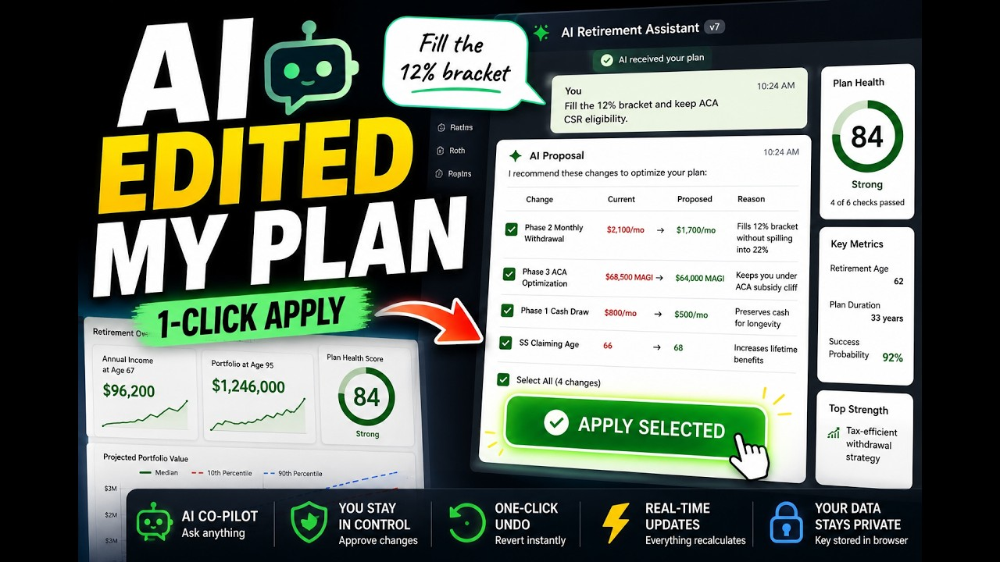

Home › How It Works
From setup to sign‑offHow it works
No installation, no account. Open the file, follow the wizard, and you’ll have a real, stress‑tested retirement plan in an afternoon — often much less.
Set up your first plan in about 3 minutes
The Quick Setup Wizard walks you step by step from zero to a complete plan, with sensible pre‑filled defaults you can customise. You stay in control at every step.
- Step‑by‑step guidance
- Pre‑filled defaults you can change
- You’re in control at every step

See your retirement, phase by phase
Your plan appears as a clear five‑phase timeline. Each phase shows withdrawals by account, gross income, taxes, healthcare costs and the net income you’d actually receive — in both today’s money and future dollars.
- Per‑account withdrawals & balances
- Taxes & healthcare estimated for every phase
- Net income shown nominal and inflation‑adjusted

Ask the AI co‑pilot in plain English
Open the Plan‑with‑AI sidebar and just ask. It proposes specific numeric changes, runs them through the planner’s own simulator, and shows the verified outcome — so you can accept improvements with confidence.
- Personalised answers in seconds
- Every proposal simulated & verified
- You approve before anything changes

Stress‑test and explore the what‑ifs
Run Monte Carlo and historical backtests, compare claiming ages, model the survivor’s income, and explore what‑ifs for inflation, Roth conversions and maximum sustainable spending — all before you commit.
- Hundreds of market scenarios, not one forecast
- Social Security & survivor planning
- What‑if explorer for every big lever

Sign off, export and review
When you’re happy, mark the plan Signed off — the planner snapshots your numbers and sets a 12‑month review reminder. Export a multi‑page PDF to keep or share, or a JSON file to back up and re‑import later.
- Draft → Under review → Signed off
- Multi‑page PDF report
- JSON backup you fully own

Video tutorials
Prefer to watch? A full playlist walks you through the planner, feature by feature.

Watch the tutorial ›